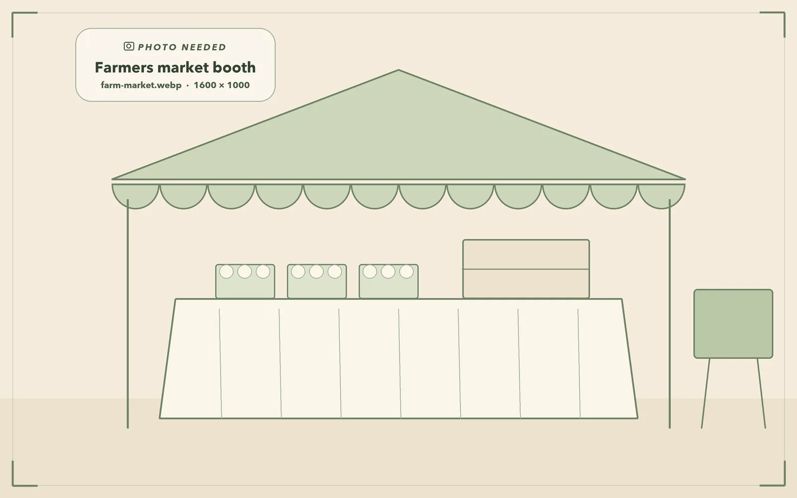

Where to buy
Local Pickup & Farmers Market Dates
Buy our eggs and lamb through local pickup or at select farmers markets.
Option one
Local pickup
Eggs and lamb are available for local pickup.
Pickup details will be posted here.

Option two
Farmers markets
Find our eggs and lamb at select farmers markets.
Upcoming market dates will be posted here.